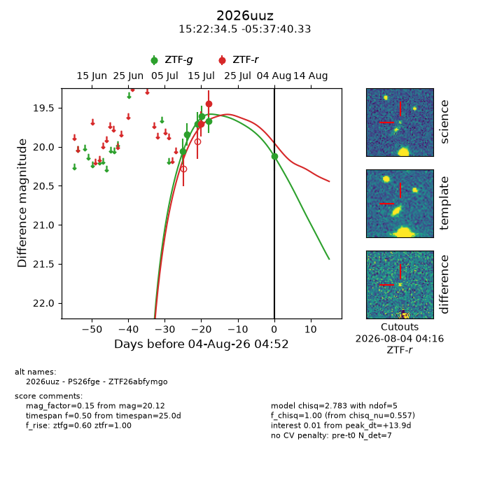
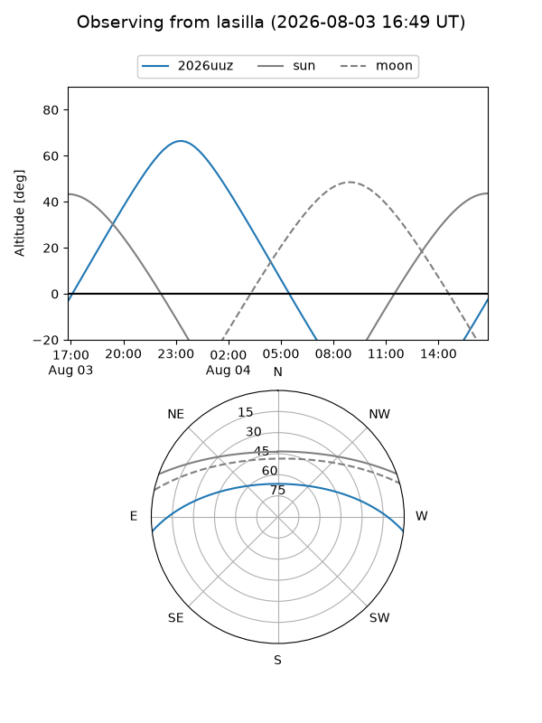
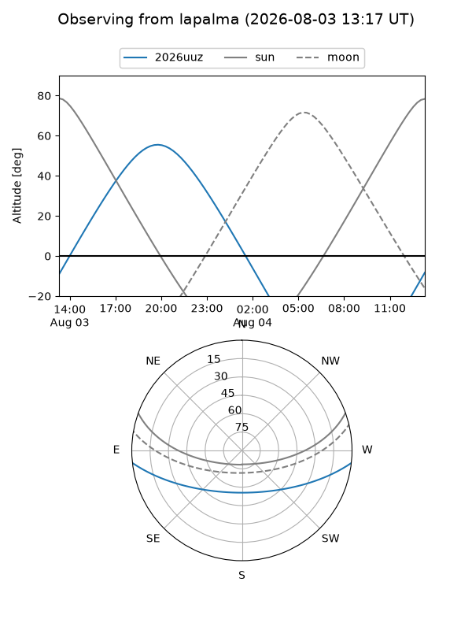
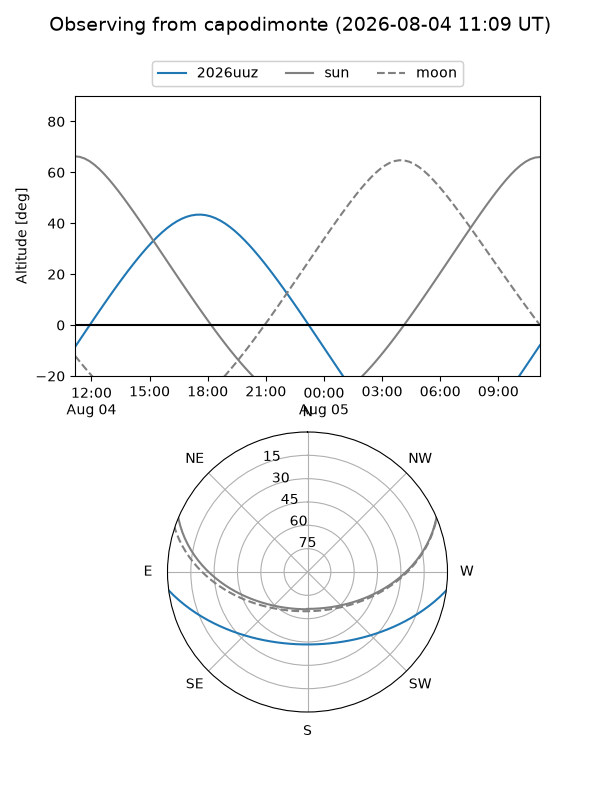
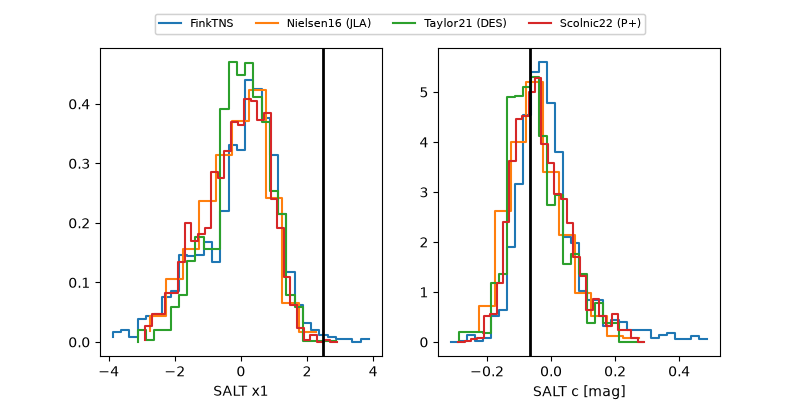

2026uuz
Target 2026uuz at 2026-08-04 04:54
Aliases and brokers:
FINK-ZTF: ztf.fink-portal.org/ZTF26abfymgo
Lasair-ZTF: lasair-ztf.lsst.ac.uk/objects/ZTF26abfymgo
ALeRCE-ZTF: alerce.online/object/ZTF26abfymgo
YSE-PZ: ziggy.ucolick.org/yse/transient_detail/2026uuz
TNS name: wis-tns.org/object/2026uuz
Direct TNS query: direct search
alt names
ZTF26abfymgo (ztf,fink_ztf)
2026uuz (tns,yse)
PS26fge (panstarrs)
Coordinates:
equatorial (ra, dec) = 230.6436,-5.62787
equatorial (HMS+DMS) = 15:22:34.48,-05:37:40.33
galactic (l, b) = (356.7529,+40.94027)
Flags:
TNS type: nan
peak dt: +13.9
Photometry:
last ztfg=20.12, ztfr=19.45
6 ztfg, 2 ztfr detections
Lightcurve

Visibility



Additional plots
